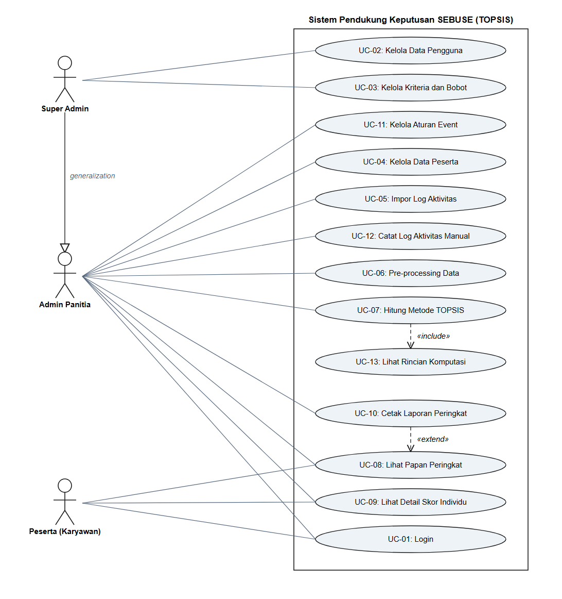

Dokumen ini memuat perbaikan use case diagram pada Bab IV bagian C.1. Penulis menyusun dokumen ini setelah dosen pembimbing menyatakan bahwa use case diagram sebelumnya belum tepat. Penulis membandingkan diagram tersebut dengan purwarupa yang telah dibangun, kemudian memperbaiki setiap ketidaksesuaian yang ditemukan.
Diagram yang direvisi merupakan diagram pada halaman 48 berkas Bab4 andweb.pdf, sedangkan deskripsi use case yang menyertainya terdapat pada halaman 49 sampai 59 berkas yang sama.
Penulis melakukan revisi atas dua landasan. Pertama, use case diagram wajib menggambarkan fungsi yang benar-benar tersedia pada sistem, bukan fungsi yang direncanakan saja. Kedua, penggunaan relasi antar use case wajib mengikuti kaidah Unified Modeling Language, khususnya kaidah arah relasi «include», relasi «extend», dan relasi generalisasi.
Penulis memeriksa kesesuaian tersebut melalui tiga sumber. Penulis membaca berkas pengendali (controller) pada direktori app/controllers, memeriksa daftar rute pada berkas config/routes.rb, lalu menjalankan pengujian hak akses pada berkas spec/requests/authorization_spec.rb. Ketiga sumber tersebut menunjukkan kewenangan setiap aktor secara pasti.
Penulis menemukan tujuh ketidaksesuaian antara use case diagram sebelumnya dan sistem yang dibangun. Tabel berikut merangkum ketujuh temuan tersebut.
| No. | Aspek | Keadaan pada diagram sebelumnya | Keadaan pada sistem yang dibangun | Tindakan perbaikan |
|---|---|---|---|---|
| 1 | Relasi «include» | UC-07 menyertakan UC-06 | Kedua use case dijalankan melalui tombol yang berbeda, dan UC-07 menolak berjalan bila UC-06 belum menghasilkan matriks keputusan | Relasi dihapus, lalu hubungan keduanya dinyatakan sebagai prasyarat pada deskripsi use case |
| 2 | Arah relasi «extend» | Anak panah mengarah dari UC-08 ke UC-10 | UC-10 merupakan perluasan pilihan dari UC-08, karena tombol cetak laporan berada pada halaman papan peringkat | Arah anak panah dibalik menjadi dari UC-10 ke UC-08 |
| 3 | Hubungan antar aktor | Super Admin dan Admin Panitia digambarkan sebagai dua aktor yang tidak berhubungan | Super Admin memperoleh seluruh kewenangan Admin Panitia melalui metode runs_topsis? pada model User | Relasi generalisasi ditambahkan dari Super Admin ke Admin Panitia |
| 4 | Aktor pada UC-09 | Hanya Peserta | Admin Panitia dan Super Admin juga dapat membuka rincian skor peserta mana pun untuk keperluan verifikasi | Asosiasi Admin Panitia ke UC-09 ditambahkan |
| 5 | Pengelolaan aturan event | Tidak dimodelkan | Sistem menyediakan halaman pengubahan dua belas parameter regulasi melalui EventsController | Use case UC-11 Kelola Aturan Event ditambahkan |
| 6 | Pencatatan log secara manual | Tidak dimodelkan, karena UC-05 hanya mencakup pengunggahan berkas | Sistem menyediakan formulir pencatatan log per baris melalui ActivityLogsController | Use case UC-12 Catat Log Aktivitas Manual ditambahkan |
| 7 | Penyajian rincian komputasi | Tidak dimodelkan | Sistem selalu menampilkan keenam tahapan perhitungan setelah UC-07 selesai, dan halaman tersebut juga dapat dibuka kembali melalui riwayat | Use case UC-13 Lihat Rincian Komputasi ditambahkan, lalu dihubungkan dengan UC-07 melalui relasi «include» |
Diagram sebelumnya menghubungkan UC-07 Hitung Metode TOPSIS dengan UC-06 Pre-processing Data melalui relasi «include». Kaidah Unified Modeling Language menyatakan bahwa relasi «include» menandakan use case dasar selalu menjalankan use case yang disertakan pada setiap pelaksanaannya. Sistem yang dibangun tidak berperilaku demikian. Admin Panitia menjalankan pre-processing melalui tombol Jalankan pre-processing pada halaman tersendiri, kemudian menjalankan perhitungan TOPSIS melalui tombol Hitung TOPSIS pada halaman yang lain. Sistem bahkan menolak perhitungan TOPSIS dan mengarahkan pengguna kembali ke halaman pre-processing apabila matriks keputusan belum terbentuk. Hubungan keduanya karena itu merupakan prasyarat, bukan penyertaan. Penulis menghapus relasi tersebut, lalu mencantumkan prasyaratnya pada bagian Precondition deskripsi UC-07.
Kaidah Unified Modeling Language menyatakan bahwa anak panah relasi «extend» mengarah dari use case perluasan menuju use case dasar. Diagram sebelumnya menggambarkan anak panah dari UC-08 menuju UC-10, sehingga maknanya menjadi papan peringkat merupakan perluasan dari cetak laporan. Sistem yang dibangun menempatkan tombol Cetak PDF dan Export Excel pada halaman papan peringkat, sehingga pencetakan laporan merupakan perluasan pilihan dari penampilan papan peringkat. Penulis membalik arah anak panah tersebut menjadi dari UC-10 menuju UC-08.
Model User pada sistem menetapkan metode runs_topsis? bernilai benar bagi peran Super Admin maupun Admin Panitia. Super Admin karena itu dapat mengelola peserta, mengimpor log aktivitas, menjalankan pre-processing, menghitung TOPSIS, serta mencetak laporan, sama seperti Admin Panitia. Diagram sebelumnya menghubungkan Super Admin hanya dengan UC-02 dan UC-03, sehingga kewenangan tersebut tidak tergambar. Penulis menambahkan relasi generalisasi dari Super Admin menuju Admin Panitia. Relasi tersebut menyatakan Super Admin mewarisi seluruh kemampuan Admin Panitia, sehingga penulis tidak perlu menggambar ulang sepuluh garis asosiasi yang sama.
Penulis menambahkan asosiasi Admin Panitia ke UC-09 karena berkas ScoresController mengizinkan pengguna dengan kewenangan perhitungan membuka rincian skor peserta mana pun. Ketentuan tersebut diperlukan agar panitia dapat memverifikasi skor peserta yang mengajukan sanggahan.
Penulis menambahkan tiga use case baru karena ketiga fungsi tersebut sudah tersedia pada sistem, namun belum tergambar pada diagram sebelumnya. UC-11 Kelola Aturan Event mengelola dua belas parameter regulasi, misalnya target poin bulanan, kuota poin harian, dan batas hari olahraga beruntun. UC-12 Catat Log Aktivitas Manual mencatat log aktivitas satu per satu, dan fungsi tersebut melengkapi UC-05 yang hanya menangani pengunggahan berkas. UC-13 Lihat Rincian Komputasi menampilkan keenam tahapan perhitungan TOPSIS, dan sistem selalu menampilkannya setelah UC-07 selesai dijalankan.

Gambar 4. 1 Use Case Diagram Sistem Pendukung Keputusan SEBUSE
Diagram tersebut memuat tiga aktor, tiga belas use case, satu relasi generalisasi, satu relasi «include», dan satu relasi «extend». Batas sistem digambarkan sebagai persegi yang membatasi seluruh use case, sedangkan ketiga aktor berada di luar batas tersebut.
Tabel berikut memuat ketiga belas use case beserta aktor utama dan berkas pengendali yang mewujudkannya pada sistem.
| Kode | Nama use case | Aktor utama | Berkas pengendali |
|---|---|---|---|
| UC-01 | Login | Admin Panitia, Peserta, Super Admin | SessionsController |
| UC-02 | Kelola Data Pengguna | Super Admin | UsersController |
| UC-03 | Kelola Kriteria dan Bobot | Super Admin | CriteriaController |
| UC-04 | Kelola Data Peserta | Admin Panitia | ParticipantsController |
| UC-05 | Impor Log Aktivitas | Admin Panitia | ActivityLogImportsController |
| UC-06 | Pre-processing Data | Admin Panitia | PreprocessingsController |
| UC-07 | Hitung Metode TOPSIS | Admin Panitia | TopsisRunsController |
| UC-08 | Lihat Papan Peringkat | Admin Panitia, Peserta | LeaderboardsController |
| UC-09 | Lihat Detail Skor Individu | Peserta, Admin Panitia | ScoresController |
| UC-10 | Cetak Laporan Peringkat | Admin Panitia | ReportsController |
| UC-11 | Kelola Aturan Event | Admin Panitia | EventsController |
| UC-12 | Catat Log Aktivitas Manual | Admin Panitia | ActivityLogsController |
| UC-13 | Lihat Rincian Komputasi | Admin Panitia | TopsisRunsController |
Kewenangan Super Admin tidak dituliskan ulang pada setiap baris, karena relasi generalisasi pada diagram sudah menyatakan Super Admin mewarisi seluruh kewenangan Admin Panitia.
Tabel berikut memperjelas kewenangan setiap aktor. Tanda centang menyatakan aktor tersebut dapat menjalankan use case yang bersangkutan.
| Use case | Super Admin | Admin Panitia | Peserta |
|---|---|---|---|
| UC-01 Login | ✓ | ✓ | ✓ |
| UC-02 Kelola Data Pengguna | ✓ | – | – |
| UC-03 Kelola Kriteria dan Bobot | ✓ | – | – |
| UC-04 Kelola Data Peserta | ✓ | ✓ | – |
| UC-05 Impor Log Aktivitas | ✓ | ✓ | – |
| UC-06 Pre-processing Data | ✓ | ✓ | – |
| UC-07 Hitung Metode TOPSIS | ✓ | ✓ | – |
| UC-08 Lihat Papan Peringkat | ✓ | ✓ | ✓ |
| UC-09 Lihat Detail Skor Individu | seluruh peserta | seluruh peserta | miliknya saja |
| UC-10 Cetak Laporan Peringkat | ✓ | ✓ | – |
| UC-11 Kelola Aturan Event | ✓ | ✓ | – |
| UC-12 Catat Log Aktivitas Manual | ✓ | ✓ | – |
| UC-13 Lihat Rincian Komputasi | ✓ | ✓ | – |
Tanda centang pada kolom Super Admin untuk UC-04 sampai UC-13 berasal dari relasi generalisasi, bukan dari asosiasi yang digambar tersendiri.
Penulis menghubungkan Super Admin dengan Admin Panitia melalui relasi generalisasi. Anak panah bermata segitiga kosong mengarah dari Super Admin menuju Admin Panitia. Relasi tersebut menyatakan Super Admin merupakan pengkhususan dari Admin Panitia, sehingga Super Admin mewarisi seluruh kemampuan Admin Panitia dan menambahkan kemampuan pengelolaan pengguna serta pengelolaan bobot kriteria.
«include»Penulis menghubungkan UC-07 dengan UC-13 melalui relasi «include». Anak panah putus-putus mengarah dari UC-07 menuju UC-13. Relasi tersebut menyatakan UC-07 selalu menjalankan UC-13 pada setiap pelaksanaannya. Sistem mewujudkan ketentuan itu dengan mengarahkan pengguna ke halaman rincian komputasi segera setelah perhitungan selesai.
«extend»Penulis menghubungkan UC-10 dengan UC-08 melalui relasi «extend». Anak panah putus-putus mengarah dari UC-10 menuju UC-08. Relasi tersebut menyatakan UC-10 merupakan perluasan pilihan dari UC-08. Admin Panitia dapat membuka papan peringkat tanpa mencetak laporan, namun tidak dapat mencetak laporan tanpa adanya hasil perhitungan yang ditampilkan pada papan peringkat.
Penulis menyusun ketiga deskripsi berikut mengikuti bentuk yang sudah dipakai pada Bab IV bagian C.1.
| Use case name | Kelola Aturan Event |
| Scenario | Mengubah parameter regulasi penilaian yang dipakai mesin pre-processing |
| Trigering Event | Menekan tombol Simpan Aturan |
| Brief Description | Suatu use case yang berfungsi menyesuaikan dua belas parameter regulasi event, meliputi target poin bulanan, kuota poin harian, syarat mingguan, batas hari olahraga beruntun, dan besar penalti, tanpa mengubah kode program. |
| Actors | Admin Panitia |
| Stake Holders | Admin Panitia, Peserta, Manajemen Perusahaan |
| Precondition | Admin Panitia telah login dan membuka halaman Event |
| Post Condition | Parameter regulasi tersimpan dan langsung dipakai pada pre-processing berikutnya |
Flows Of Activity
| Actors | System |
|---|---|
| 1. Memilih menu Event, lalu menekan Ubah aturan | 1.1 Menampilkan formulir parameter regulasi beserta nilai yang berlaku |
| 2. Mengubah nilai parameter yang diperlukan | |
| 3. Menekan tombol Simpan Aturan | 3.1 Memvalidasi setiap parameter agar bernilai lebih besar dari nol 3.2 Jika data valid, sistem menyimpan parameter dan menampilkan halaman event 3.3 Jika data tidak valid, sistem menampilkan pesan kesalahan pada formulir |
| Use case name | Catat Log Aktivitas Manual |
| Scenario | Mencatat satu baris log aktivitas fisik peserta melalui formulir |
| Trigering Event | Menekan tombol Simpan Log |
| Brief Description | Suatu use case yang berfungsi mencatat log aktivitas satu per satu, dipakai untuk penyesuaian data atau untuk peserta yang datanya tidak tercakup pada berkas rekap. |
| Actors | Admin Panitia |
| Stake Holders | Admin Panitia, Peserta |
| Precondition | Admin Panitia telah login dan membuka daftar log aktivitas seorang peserta |
| Post Condition | Satu baris log aktivitas tersimpan dengan penanda sumber manual |
Flows Of Activity
| Actors | System |
|---|---|
| 1. Menekan tombol Catat aktivitas | 1.1 Menampilkan formulir log aktivitas |
| 2. Mengisi tanggal, jenis aktivitas, poin, jarak, dan tautan bukti | |
| 3. Menekan tombol Simpan Log | 3.1 Memvalidasi kelengkapan dan kewajaran nilai yang diisikan 3.2 Jika data valid, sistem menyimpan log beserta penanda sumber manual 3.3 Jika data tidak valid, sistem menampilkan pesan kesalahan |
| Use case name | Lihat Rincian Komputasi |
| Scenario | Menampilkan keenam tahapan perhitungan TOPSIS beserta rumusnya |
| Trigering Event | Selesainya perhitungan TOPSIS, atau menekan tautan Rincian komputasi pada riwayat |
| Brief Description | Suatu use case yang berfungsi menyajikan matriks keputusan, matriks ternormalisasi, matriks terbobot, solusi ideal, jarak Euclidean, dan nilai preferensi dari cuplikan yang tersimpan pada saat perhitungan dijalankan. |
| Actors | Admin Panitia |
| Stake Holders | Admin Panitia, Peserta, Manajemen Perusahaan |
| Precondition | Perhitungan TOPSIS telah dijalankan sekurang-kurangnya satu kali |
| Post Condition | Seluruh tahapan perhitungan tersaji beserta bobot yang dipakai saat eksekusi |
Flows Of Activity
| Actors | System |
|---|---|
| 1. Menyelesaikan UC-07, atau memilih satu baris pada riwayat perhitungan | 1.1 Mengambil cuplikan perhitungan dari tabel topsis_runs |
| 1.2 Menampilkan matriks X, R, dan Y secara berurutan | |
| 1.3 Menampilkan solusi ideal positif dan negatif | |
| 1.4 Menampilkan jarak Euclidean, nilai preferensi, dan peringkat setiap peserta |
Penulis menyesuaikan empat deskripsi use case agar selaras dengan diagram hasil revisi. Tabel berikut memuat kalimat sebelum dan sesudah penyesuaian.
| Use case | Bagian | Kalimat sebelumnya | Kalimat setelah penyesuaian |
|---|---|---|---|
| UC-05 | Use case name | Import Log Activities | Impor Log Aktivitas |
| UC-05 | Brief Description | Memuat data mentah pencapaian olahraga peserta ke dalam sistem | Memuat data mentah pencapaian olahraga seluruh peserta melalui satu berkas rekap berformat CSV, XLSX, atau XLS, dengan pencocokan peserta melalui kolom NIP |
| UC-06 | Actors | System (di-trigger oleh Admin Panitia) | Admin Panitia |
| UC-07 | Precondition | Matriks Keputusan (X) hasil pre-processing dan bobot kriteria telah siap di sistem | Matriks keputusan hasil UC-06 telah terbentuk, dan akumulasi bobot kriteria bernilai tepat 100% |
| UC-09 | Actors | Peserta | Peserta, Admin Panitia |
| UC-09 | Brief Description | Menyajikan breakdown evaluasi mandiri skor per kriteria milik akun peserta terhubung | Menyajikan rincian skor sepuluh kriteria. Peserta hanya dapat membuka rincian miliknya sendiri, sedangkan Admin Panitia dapat membuka rincian peserta mana pun untuk keperluan verifikasi |
Penulis mengubah aktor UC-06 dari System menjadi Admin Panitia karena kaidah Unified Modeling Language menempatkan sistem sebagai pelaksana, bukan sebagai aktor. Pre-processing dijalankan atas perintah Admin Panitia, sehingga Admin Panitia merupakan aktor yang tepat.
Penulis tidak memodelkan tiga fungsi berikut sebagai use case tersendiri, dan menyampaikan alasannya secara terbuka agar pemodelan tetap dapat dipertanggungjawabkan.
| Fungsi | Alasan |
|---|---|
| Halaman dasbor | Halaman tersebut menyajikan ringkasan keadaan event beserta tautan navigasi, dan tidak mewakili satu tujuan pengguna yang berdiri sendiri |
| Halaman riwayat perhitungan | Halaman tersebut berfungsi sebagai daftar navigasi menuju UC-13, sehingga tercakup di dalamnya |
| Penampilan daftar kriteria bagi Admin Panitia dan Peserta | Kedua peran hanya membaca daftar tersebut sebagai rujukan, sedangkan pengelolaannya tetap menjadi kewenangan Super Admin pada UC-03 |
| Bagian | Tindakan |
|---|---|
| C.1, gambar use case diagram halaman 48 | Diganti dengan docs/gambar/18-use-case-revisi.png |
| C.1, paragraf setelah gambar | Ditambahi penjelasan tiga aktor, tiga belas use case, dan ketiga relasi sebagaimana bagian C dan F dokumen ini |
| C.1, deskripsi use case | Ditambahi tiga deskripsi baru dari bagian G, dan disesuaikan menurut tabel bagian H |
Gambar 4. 1 Use Case Diagram Sistem Pendukung Keputusan SEBUSEPenulis menyarankan penomoran gambar Bab IV tetap seperti semula. Activity diagram dan sequence diagram cukup disajikan untuk UC-01 sampai UC-10, lalu penulis menyatakan pada teks bahwa UC-11 sampai UC-13 merupakan fungsi pendukung yang dimodelkan pada use case diagram dan dijelaskan melalui deskripsi use case. Dengan pilihan tersebut, penomoran gambar tidak bergeser.
| Rentang | Isi |
|---|---|
| Gambar 4. 1 | Use case diagram hasil revisi |
| Gambar 4. 2 – 4. 11 | Activity diagram UC-01 sampai UC-10 |
| Gambar 4. 12 – 4. 21 | Sequence diagram UC-01 sampai UC-10 |
| Gambar 4. 22 – 4. 23 | Class diagram dan Entity Relationship Diagram |
| Gambar 4. 24 – 4. 37 | Implementasi antarmuka |
Apabila dosen pembimbing meminta activity diagram dan sequence diagram untuk ketiga use case tambahan, penulis perlu menambahkan enam gambar. Seluruh penomoran gambar setelah sequence diagram akan bergeser sebanyak enam nomor.
Penulis menggambar diagram hasil revisi melalui berkas script/build_use_case_diagram.rb. Berkas tersebut menghitung seluruh titik koordinat, lalu menghasilkan docs/diagram/use-case.svg. Penulis dapat menyesuaikan tata letak, menambah use case, atau mengubah asosiasi dengan menyunting tetapan pada bagian awal berkas tersebut, kemudian menjalankan perintah berikut:
ruby script/build_use_case_diagram.rbBerkas SVG dapat dibuka langsung pada peramban, dan dapat pula disisipkan ke dalam dokumen pengolah kata tanpa kehilangan ketajaman gambar.